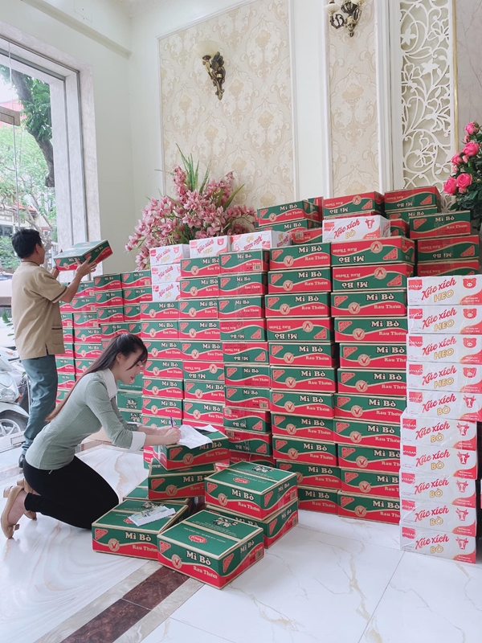
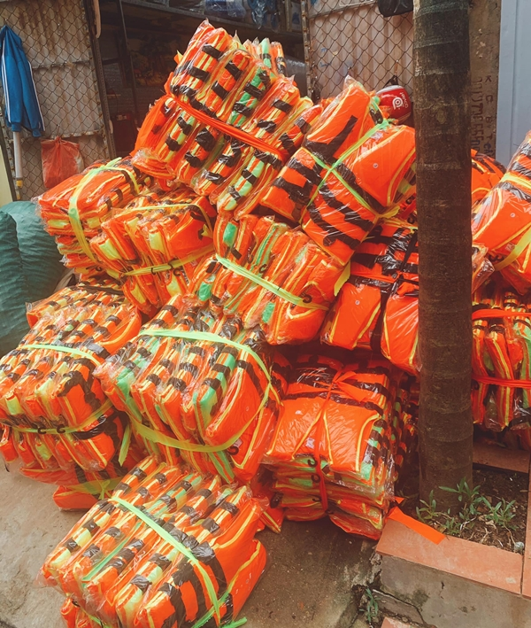

Âu Hà My ủng hộ miền Trung 100 triệu sau hơn 1 tháng ở ẩn
Chung tay với nhiều sao Việt, Âu Hà My ủng hộ miền Trung 100 triệu bằng cách mua rất nhiều nhu yếu phẩm, áo phao để gửi đi hỗ trợ.
TIN LIÊN QUAN
- Hình ảnh Thủy Tiên ăn mì giữa lũ khiến dân mạng xúc động
- Yêu 6 năm cưới 5 ngày thì chồng thú nhận có con với người khác
- Kỳ Duyên cứu trợ miền Trung nhưng bị mất cả trăm triệu vì hỏng hết hàng
Những ngày vừa qua, những bản tin về miền Trung đang ngập lụt nặng và cuộc sống khó khăn của bà con liên tục được cập nhật trên mọi phương tiện thông tin. Rất nhiều sao Việt như Đại Nghĩa, Thủy Tiên đã quyên góp tiền được hàng trăm tỷ, đến tận nơi ngập nặng để cứu trợ bà con. Mới đây, Âu Hà My cũng ủng hộ miền Trung với số tiền 100 triệu của bản thân. Cô góp thêm cùng bạn bè cũng được một khoản khá lớn, mua rất nhiều đồ như áo phao, mỳ tôm, sữa, bánh, đèn pin...
Sau hơn 1,5 tháng im ắng hoàn toàn trên các trang mạng xã hội, Âu Hà My bỗng ủng hộ miền Trung đúng ngày 20/10 đã nhận được rất nhiều lời khen ngợi từ phía dân mạng. Dù ủng hộ số tiền không nhỏ nhưng Âu Hà My vẫn rất khiêm tốn, cho rằng đây chỉ là góp một chút sức mọn.
Âu Hà My viết: "20/10 không cần hoa và quà, hướng về miền Trung thân thương, mấy ngày qua đọc những tin tức đau lòng của ng dân vùng bão lũ, Hà My xin được phát tâm ủng hộ 100 triệu đồng và chị Hoàng Song Hà 115 triệu đồng. Ngoài ra e xin cám ơn tấm lòng sẻ chia cứu giúp miền Trung ruột thịt của các mạnh thường quân mà chị Hà kêu gọi được với 43,5 triệu đã giúp chúng em thực hiện được điều ý nghĩa này. Một ngày 20/10 thật khác, xung quanh chỉ toàn áo phao và nhu yếu phẩm mỳ tôm bánh sữa để đi thiện nguyện, thương lắm những người dân đang từng giờ chống chọi với bão lũ.".
Cộng đồng mạng đã dành cho Âu Hà My những lời có cánh như giàu lòng nhân ái, không phô trương ồn ào... Nữ giảng viên cho biết đây là lần đầu tiên cô làm việc này nên chưa có nhiều kinh nghiệm, phải chạy đôn chạy đáo khá vất vả.
Cách đây ít phút, nữ giảng viên đã chia sẻ chuyện trốn mẹ đi về miền Trung để cứu trợ bà con khiến nhiều người cảm phục. Âu Hà My viết: "2 chị e đã có mặt tại Quảng Bình! Phải giấu mẹ ra sân bay từ 3h sáng, mong mẹ hiểu và không trách con gái mẹ nhé! Tất cả chúng con chỉ mong cứu được thật nhiều người lúc này thôi. Giờ 2 chị em ngồi đợi chuyến bay chở hàng sẽ hạ cánh vào trưa nay rồi chia đồ luôn, em sẽ cập nhật tình hình nhé ạ! Nam mô a di đà phật phù hộ cho tất cả đồng bào con!".
Sau ồn ào tình cảm với Trọng Hưng, Âu Hà My sống lặng lẽ hơn, ít chia sẻ ảnh về cuộc sống hiện tại, có khoảng thời gian Hà My còn đóng Facebook để tịnh tâm.